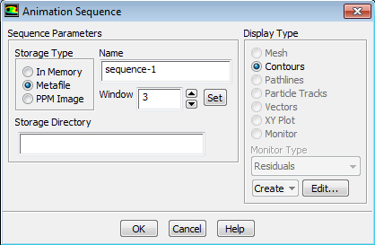

ANSYS® Fluent CFD: A Short Course for Engineers
Transient Natural Convection
Contents
- Transient Natural Conection in a Square Cavity
- Introduction
- Geometry and Mesh
- Setup
- Run
- Convergence Criteria
- Creating New Surface Monitors
- Setting Up Animation
- Run and Post-processing
- Credits
Exercise 6.2: Transient Natural Conection in a Square Cavity¶
Introduction¶
Now you will simulate the same problem as you did ex-6-2-Intro time, but you do it transiently. This lab will teach you to run a transient simulation as well as to make animated solution playback.
Geometry and Mesh¶
- Geomerty and Mesh remain the same. Hence we can directly start from the
Setup.
Setup¶
- Start FLUENT from your old project file.
- In the
Generalmenu, change theTimeoption toTransient. Keep the rest of setups same as last time.
- Go to
Solution Methods. Note that a new option has appeared in the solution methods:Transient Formulation. - Examine the options in the pull down menu and see the methods available.
- For now, we accept the
First Order Implicit scheme.
Run¶
- Initialize the solution and go to the
Run Calculationmenu. - Change the
Time Step Sizeto $1$, theNumber of Time Stepsto $20$ (giving a total simulation time of $20$ seconds), and leave theMax Iterations/Time Stepat $20$. - Hit the
Calculatebutton.
The viewport will change to the residual against the iteration number. The $Sawtooth$ that you are seeing is the simulation starting a time step, reducing the residual by iterations, and then starting a new time step.
- After the calculation is completed, plot a temperature contour of the domain.
What is the contour telling you? The convection has yet to begin. The time step size of 1 second happens to be small relative to the evolution of this problem.
- Change the time step size to $10$ seconds and run for another $20$ time steps (do not initialize the solution). FLUENT will warn about changed settings; select
Use setting changes for current calculation only. Keep an eye on the magnitude of residuals. They are all larger than that with the smaller time step.
Again, plot a temperature contour after the calculation. It should show a bit more action this time.
We have expedited the evolution of solution at the price of reducing accuracy. Such tradeoff exists in any transient simulation.
Convergence Criteria¶
- Go to
Monitorsand double clickResiduals – Print, Plot.
We can change the way the residuals are monitored and their convergence in the window that appears.
- Change the
Convergence Criterionfromabsolutetorelative.
If "absolute" criterion is chosen, the residual (scaled and/or normalized) of an equation at an iteration is compared with a user-specified value. If the residual is less than the user-specified value, that equation is deemed to have converged for a timestep.
On the other hand, if "relative criterion" is selected, the residual of an equation at an iteration of a timestep is compared with the residual at the start of the timestep. If the ratio of the two residuals is less than a user-specified value, that equation is deemed to have converged for a timestep.
In many transient flows, the absolute convergence criterion could be too stringent causing a large number of iterations per timestep. For example, the scaling of the continuity equation is based on the value of the continuity residual in the first five iterations. The scaling factor could be low if the initial continuity residual is small and thus the scaled residual could fail to meet the absolute convergence criterion. With the relative convergence criterion, convergence is checked by comparing the residual at an iteration of a timestep with the residual at the beginning of the timestep and hence this problem is alleviated. Thus, relative convergence criterion is recommended for unsteady simulations.
Creating New Surface Monitors¶
Are we at steady state yet? In addition to the default residual plot, we need a better indication of the evolution of solution, so that we know when the solution has converged to a steady state.
- Click
Createunder theSurface monitorin theMonitorssection. - In the
Surface Monitorwindow, check thePlotbox and output the monitor to window 2. Set $X$ Aixs toTime Step, andGet Data Every$1$Time Step. - Select the
Report Typeto beFacet Maximum, and theField VariabletoVelocity Magnitude. - Click on the
New Surfacepulldown and make a newLine/Rakethat is the vertical centerline across the domain. - Set the monitor to watch this surface.
The monitor will output the maximum velocity along the line at every time step.
Setting Up Animation¶
- To watch the entire temperature field evolve with time, you need the view the
Calculation Activitiesmenu and create aSolution Animation.
- In the menu that appears, set the
Animation Sequencesto $1$, changeWhentoTime Step, and hit theDefinebutton.
- In the next window that appears, change
Windowto $3$, and click theSetbutton.

- Next, change the
Display TypetoContours, and in the window that appears, changeContours oftoTemperature, clickDisplayand close the window. - Click
OKto finish the definition. Now theActivebox should have a checkmark.
Run and Post-processing¶
- Initialize the solution and run the calculation with a time step of $300$ seconds for $50$ time steps.
- At the top of the Viewport, click on the pulldown menu that says “1: scaled residuals” and change it to “2: convergence history”.
As the simulation progresses, this plot will show you the value of the velocity along the centerline. Watching this plot will show us when the points on that line have reached a value that no longer changes with time.
- After the calculation, go to the Graphics and Animations menu, and set up a
Solution Animation Playback. - You will see the sequence you just created become available. Hit the play button and enjoy the movie!
An example movie has been provided.
Credits
Sparsh Chadha, Neal Davis, and Zhongzhong Zhang developed these materials for Computational Science and Engineering at the University of Illinois at Urbana–Champaign.
 This content is available under a Creative Commons Attribution-NonCommercial 4.0 Unported License.
This content is available under a Creative Commons Attribution-NonCommercial 4.0 Unported License.